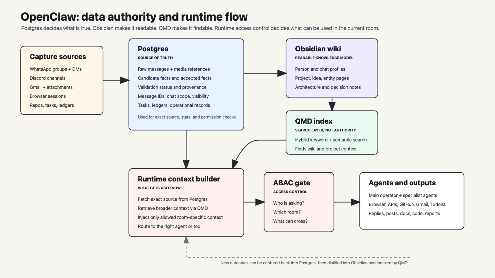

An AI operator with operating memory. Not a chatbot — a system that carries context across every surface it works on.
Built to work across WhatsApp, Discord, email, browser, code repositories, finance ledgers, calendars, and project documents. It captures raw evidence, turns it into validated facts, searches a knowledge base, respects who can see what, and acts through the right tool without losing the thread.
Postgres decides what is true. Obsidian makes it readable. QMD makes it findable. Runtime access control decides what can be used in the current room.

I built a custom operating-memory layer on top of the OpenClaw personal assistant architecture because my work lives across WhatsApp, Discord, email, browser sessions, repositories, tasks, notes, finance systems, and client documents. The point is to let the assistant carry context across those surfaces: capture raw evidence, turn it into validated facts, search the knowledge base, respect chat-level access boundaries, and act through the right tool without losing the thread.
There are two useful measures of a system like this. First: can it be called into real work, carry shared context forward, and recover when corrected? Second: can it retrieve the right information that I can't remember?
A fact is a structured claim extracted from raw material: typed, sourced to message IDs, dated, scoped to a chat, with visibility and validation status. Examples: a project constraint, a decision, a correction, a preference, an investment rule, a relationship, an idea.
26,627 candidate facts were extracted. 13,035 were accepted, meaning allowed to affect future context. The rest are rejected, superseded, or stale. This filtering matters because chat is noisy. People joke, change their minds, correct themselves, and speak differently in different rooms.
Stores raw messages, media references, candidate facts, accepted facts, validation status, provenance, chat scope, access rules, task records, and structured ledgers. Searchable through vector retrieval, but search results are never treated as truth by themselves. For exact source, state, and permission checks, Postgres is the authority.
Accepted facts are distilled into person pages, chat pages, project notes, idea notes, entity pages, and architecture notes. This is where the system becomes legible to a human: not rows in a database, but a wiki of people, projects, constraints, history, and decisions.
Indexes Obsidian and project documents for hybrid keyword and semantic search. It finds relevant material quickly. It does not create truth and it does not replace Postgres.
At runtime the agent combines them: Postgres for exact source and permissioned facts, Obsidian/QMD for broader context, then an access-control check before anything is injected into the current chat. After work is done, new outcomes are captured back into Postgres and later distilled into the wiki.
Access control is not bolted on. The system checks who is asking, which channel they are in, which chat the fact came from, what access scope applies, and whether the fact can cross rooms. Attribute-based access control, enforced in Postgres at the query level. This is what makes shared memory useful without making it a leak.
Most chats are chat-scoped: they see only their own messages and global facts. A few channels and DMs are full-scoped: cross-chat access to everything. Some Discord channels are guild-scoped: they see other channels in the same server, nothing wider. The boundary is structural, not advisory. You cannot prompt your way past it.
Collating a personal balance sheet across four share broker accounts, crypto wallets, property, loans, cash, email attachments, FX, lots, cost basis, and current holdings. Not just listing assets but answering what is owned, where it came from, what changed, and what evidence supports the number.
Working inside a C++/SDL2 Dune Legacy fork integrating Micropolis-style city simulation into a Dune II-style RTS. The system keeps project constraints live: zones stay 2x2, slabs replace roads and power lines, WindTraps power the city layer, save/load determinism matters. Release builds, versioning, CI/CD, installer packaging, and the website you're reading this on.
Turning chat-based work with collaborators into strategy packs, website recommendations, product positioning, and client-ready material. Source conversations, decisions, objections, and final output stay connected through the system. 344 people profiled, 79 with structured facts the system can reason about.
80,462 emails archived and searchable. Gmail triage under GTD rules: inbox items become decisions, archive, waiting-for, or next actions. Actionable emails convert to Todoist tasks. The archive runs on a local SQLite database with vector embeddings, so semantic search works without hitting Gmail's API.
WhatsApp and Discord capture pipelines, Messenger bridge work, Gmail triage into Todoist, an agent job queue with Postgres-backed retry and stall detection, project reconciliation, browser publishing, and content drafting. 157 agent jobs dispatched, 139 completed. The system delegates implementation work to Claude Code through a durable job queue.
481 corrections logged. Each is a structured fact: what was wrong, who corrected it, when, and in which chat. Corrections feed back into the system as constraints. A correction about confusing two people becomes a disambiguation rule. A correction about a wrong portfolio number becomes a ledger validation gate. A correction about a fabricated quote becomes a hard rule against invention.
The system's core failure mode is "competence theatre": clean narration before source checks, "done" when only planned, stale-memory confidence, plausible tool paths, and freehand math. The correction loop is how trust gets rebuilt — not by promising to do better, but by writing a rule, a gate, or a spec that makes the same failure structurally harder.